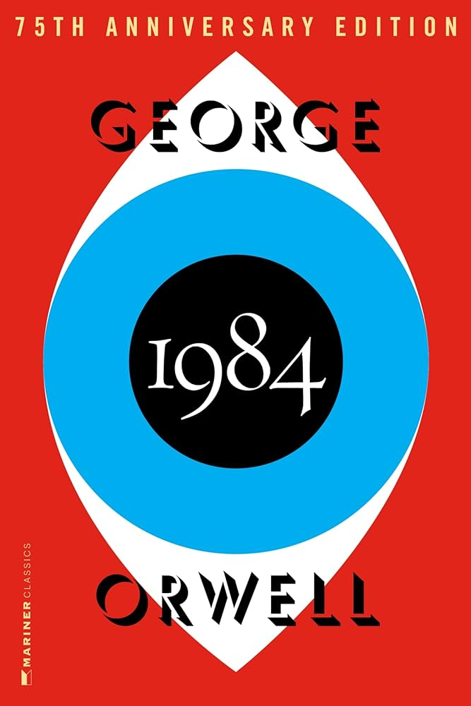

"1984" by George Orwell is a dystopian novel set in a totalitarian future where the government, led by the Party and its leader Big Brother, exercises complete control over every aspect of people's lives. The protagonist, Winston Smith, works for the Ministry of Truth, where he alters historical records to match the Party's propaganda. As Winston begins to rebel against the oppressive regime, he starts an illicit affair with Julia, a fellow Party member, leading to their eventual capture and torture by the Thought Police. The novel explores themes of surveillance, propaganda, and the erosion of individual freedom, painting a bleak picture of a society where truth is manipulated, and dissent is punished mercilessly. "1984" continues to resonate with readers worldwide, serving as a chilling warning about the dangers of unchecked authoritarianism and the importance of safeguarding personal liberties.
